정보통신산업기사 (2005-03-06 기출문제)
1과목: 디지털전자회로
1. 다음 그림과 같이 NAND 게이트가 연결되어 있다. 이회로와 등가인 게이트는?
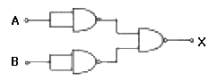
- OR 게이트
- AND 게이트
- NOR 게이트
- NAND 게이트
(정답률: 알수없음)

2. 정전압회로에서 주로 사용되는 다이오드는?
- 터널 다이오드
- 제너 다이오드
- 발광 다이오드
- 바렉터 다이오드
(정답률: 알수없음)
3. 그림은 이상적인 펄스이다. 이 펄스의 점유율 D는?
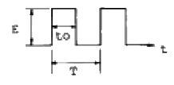
- D = to / T
- D = T / to
- D = E / T
- D = E / to
(정답률: 알수없음)
4. 전압 증폭도가 20[㏈]와, 60[㏈]인 증폭기를 직렬로 연결시키면 종합 이득은 얼마인가?
- 10
- 100
- 1000
- 10000
(정답률: 알수없음)
5. 증폭이득이 60[dB]인 증폭기에서 20[%]의 찌그러짐이 발생했다. 이것을 2[%] 이내로 개선하기 위해서 걸어야 할 부궤환은?
- 10[dB]
- 20[dB]
- 30[dB]
- 40[dB]
(정답률: 알수없음)
6. 다음과 같은 연산 증폭회로에서 Z에 흐르는 전류 i의 값은 얼마인가?
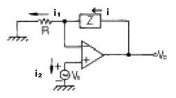
- 0
- i1
- (Z/R)i1
- i1 + i2
(정답률: 알수없음)
7. 정논리(positive logic)에서 입력이 A, B일 때 회로의 출력(Y)을 나타내는 논리식은?
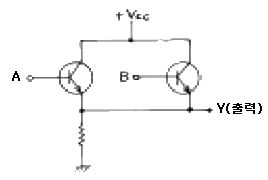
- AB
- A+B
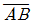
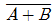
(정답률: 알수없음)
8. 다음 중 입출력장치를 마이크로컴퓨터에 연결하는 데에 필요한 장치는?
- 인터페이스(interface)회로
- 레지스터(register)회로
- 누산기(accumulator)회로
- 계수기(counter)회로
(정답률: 알수없음)
9. 수정발진기의 직렬공진주파수 fs, 전극용량을 포함한 병렬공진주파수를 fp라 할 때 수정발진기가 안정된 발진을 하기 위한 동작주파수의 조건은?
- fs 보다 낮게 한다.
- fp 보다 높게 한다.
- fs 보다 낮게, fp보다 높게 한다.
- fs 보다 높게, fp보다 낮게 한다.
(정답률: 알수없음)
10. 다음 중 수정 발진자의 특징과 거리가 가장 먼 것은?
- Q(Quality factor)가 매우 높다.
- 주파수 안정도가 105∼108 정도로 매우 안정하다.
- 유도성 영역이 매우 좁다.
- 병렬공진주파수 부근에서 대단히 큰 LC동조회로와 같은 임피던스 특징을 갖는다.
(정답률: 알수없음)
11. 진폭변조에서 변조도 80[%]이고 반송파 평균전력이 300[W]일 때 피변조파의 평균 전력은?
- 328[W]
- 396[W]
- 440[W]
- 520[W]
(정답률: 알수없음)
12. 플립플롭을 구성하는데 주로 이용되는 회로는?
- 쌍안정 멀티바이브레이터
- 단안정 멀티바이브레이터
- 비안정 멀티바이브레이터
- 무안정 멀티바이브레이터
(정답률: 알수없음)
13. 트랜지스터 증폭회로에서 저항 R1의 역할은?
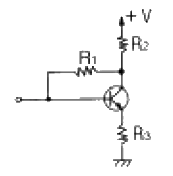
- 입력 임피던스 조절
- 에미터 바이어스
- 부궤환 작용
- 부하저항
(정답률: 알수없음)
14. 트랜지스터의 베이스 접지에서 전류 증폭율이 0.99이다. 이것을 에미터 접지에서의 전류 증폭률로 구하면 얼마인가?
- 96
- 97
- 98
- 99
(정답률: 알수없음)
15. 다음 중 소비전력이 가장 적은 소자는?
- TTL
- ECL
- RTL
- CMOS
(정답률: 알수없음)
16. 25 : 1의 리플 카운터를 설계하고자 한다. 최소한 몇 개의 플립플롭이 필요한가?
- 4개
- 5개
- 6개
- 7개
(정답률: 알수없음)
17. 주파수변조에서 다음 변조지수 중 대역폭이 가장 넓은 것은?
- 0.17
- 2.9
- 3.1
- 4.2
(정답률: 알수없음)
18. 이상적인 연산 증폭기의 특징으로 적당치 않은 것은?
- 무한대의 입력 임피이던스
- 무한대의 출력 임피이던스
- 무한대의 전압 이득
- 무한대의 대역폭
(정답률: 알수없음)
19. 다음 그림과 같은 J - K F/F 회로에서 클럭펄스가 몇 개 입력될 때 Q2에 출력되는가?
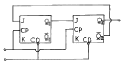
- 3
- 4
- 5
- 6
(정답률: 알수없음)
20. 다음 논리식을 간단히 한 결과는?
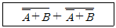
- A + B
- AB
- A
- B
(정답률: 알수없음)
2과목: 정보통신기기
21. 2개 또는 6개 이상의 음성대역 회선을 사용하여 고속 전송을 할수 있는 기기의 이름은?
- 집중화기
- 시분할 다중화기
- 지능 다중화기
- 역 다중화기
(정답률: 알수없음)
22. 다음 중 정보 전송 기기의 Modem 수신기 구성 요소가 아닌 것은?
- Descrambler
- Equalizer
- Data Decoder
- Modulator And Amplifier
(정답률: 알수없음)
23. ITU-T X시리즈 권고 인터페이스 규약 중 X.21에 해당하는 것은?
- 공중 데이터망에서의 국제적인 사용자 서비스 클래스의 규정
- 공중 데이터망의 국제적인 사용자 설비
- 공중 데이터망에서의 동기 동작을 위한 DTE와 DCE 사이의 인터페이스 규약
- 공중 데이터망에서 패킷모드로 동작하는 단말의 DTE와 DCE 사이의 인터페이스 규약
(정답률: 알수없음)
24. 다음 중 위성통신이 갖는 일반적인 특징이 아닌 것은?
- 장거리 광대역 통신
- 우수한 전송품질
- 대용량의 통신
- 외부의 방해에 강하다.
(정답률: 알수없음)
25. 뉴 미디어는 방송계, 통신계, 패키지계로 분류할 있다. 통신계에 해당되지 않은 것은?
- 화상회의
- 비디오 디스크
- 비디오텍스
- 팩시밀리
(정답률: 알수없음)
26. 위성통신에서 위성체의 모니터 제어 등을 하는 서브 시스템은?
- Propulsion sub-system
- Power sub-system
- Communication sub-system
- Telemetry tracking and command sub-system
(정답률: 알수없음)
27. AM 송신기의 구성요소가 아닌 것은?
- 발진부
- 증폭부
- 변조부
- 주파수 변환부
(정답률: 알수없음)
28. 교환기의 구성요소 중 통화로계의 구성요소가 아닌 것은?
- 통화로 장치
- 주사장치
- 교환용 프로그램
- 통화로 제어 회로
(정답률: 알수없음)
29. 다음 중 상호 연결이 잘못된 것은?
- 문자입력 장치 - 화상의 작성
- 음성인식장치 - 발성
- 키보드 - 키스위치의 누름
- 광펜(light pen) - 펜에 의한 지시
(정답률: 알수없음)
30. 다음 중 CATV의 기본구성요소가 아닌 것은?
- 헤드엔드
- 중계전송망
- 가입자설비
- 교환장비
(정답률: 알수없음)
31. 전화교환기에서 포선논리제어방식과 비교하여 축적프로그램제어(SPC) 방식을 사용함으로써 얻어지는 결과가 아닌 것은?
- 신뢰성의 향상
- 가입자에게 다양한 기능부여
- 공통제어 장치의 증가
- 융통성의 풍부
(정답률: 알수없음)
32. 문자나 도형 등을 입력하기 위하여 평면 모양으로 구성된 입력면내에 지시펜 등으로 지시하므로써 그 위치정보를 입력할 수 있는 단말장치는?
- OCR
- OMR
- COM
- Tablet
(정답률: 알수없음)
33. 다음 중 비디오 텍스 통신 시스템의 기본 구성이 순서대로 맞게 연결된 것은?
- 입력장치 - 전화망 – 정보저장장치 - 비디오텍스 통신처리 장치 - 전화 단말기 - 텔레비젼
- 입력장치 - 정보 축적장치 - 비디오텍스 통신처리 장치 - 전화망 - 텔레비젼
- 입력장치 - 비디오텍스 통신처리 장치 - 정보축적장치 - 전화망 - 텔레비젼
- 입력장치 – 정보저장장치 - 비디오텍스 통신처리 장치 - 전용선 - 전화망 - 텔레비젼
(정답률: 알수없음)
34. OSI 참조 모델의 물리계층에서 망을 연결하고 신호 재생의 역할을 수행하는 장비는 어떤것인가?
- 라우터
- 리피터
- 브리지
- 스위치
(정답률: 알수없음)
35. 전화 교환기의 통화량과 통화 접속상황등과의 관계를 조사하는 파라메터가 아닌 것은?
- 최번시(Busy Hour)
- 보류시간(Holding Time)
- 호손율
- 데이터 전송률
(정답률: 알수없음)
36. ISDN의 채널 종류가 아닌 것은?
- B채널
- H채널
- D채널
- E채널
(정답률: 알수없음)
37. 다음의 전기통신의 예 중 그 성격이 다른 것은?
- 라디오
- 텔레비젼
- 전화
- 디지털 TV
(정답률: 알수없음)
38. 통신위성 지구국에 설치하는 안테나로 가장 적당한 것은?
- 헤리컬 안테나
- 야기 안테나
- 카세그레인 안테나
- 비버리지 안테나
(정답률: 알수없음)
39. 다음 중 CATV의 특징이 아닌 것은?
- 전송매체로서 평형케이블을 이용한다.
- 광대역 전송특성이 있다.
- 난시청 지역의 해소를 목적으로 시작하였다.
- 쌍방향 시스템 구축이 가능하다.
(정답률: 알수없음)
40. 다음 중 통신제어장치(CCU)의 구성요소가 아닌 것은?
- 회선 제어부
- 회선 접속부
- 변복조부
- 채널 인터페이스부
(정답률: 알수없음)
3과목: 정보전송개론
41. PCM방식에서 송신순서로써 옳은 것은?
- 음성 - 표본화 - 양자화 - 부호화 - 전송로
- 음성 - 양자화 - 표본화 - 부호화 - 전송로
- 음성 - 표본화 - 부호화 - 양자화 - 전송로
- 음성 - 양자화 - 부호화 - 표본화 - 전송로
(정답률: 알수없음)
42. 데이터 링크의 초기설정, 데이터 전송 동작모드의 설정요구 및 그에 대한 응답용으로 사용하기 위해서는 HDLC프로토콜의 제어부를 다음 중 어떤 형식으로 만들어야 하는가?
- 정보전송형식
- 감시형식
- 비번호제형식
- 절단형식
(정답률: 알수없음)
43. PCM의 표본화 과정에 의해 얻어진 신호는 다음 중 어느 신호인가?
- PAM
- PPM
- PTM
- PWM
(정답률: 알수없음)
44. 데이터전송 중에 각종 잡음에 의해 부호가 오류(error)를 발생할 때 이를 검출하여 정정하는 오류제어방식 중 수신측에서 오류를 체크하여 정정하는 방식의 종류는?
- 패리티체크방식, 정 MARK-SPACE 방식
- 반송조합방식, 체크부호반송방식
- 병렬전송방식, 반복전송방식
- 해밍(HAMMING)부호방식, BCH부호 방식
(정답률: 알수없음)
45. 2×106 비트가 전송될 때 20개의 비트 에러가 발생한 경우 비트 오율(BER)은?
- 1 × 105
- 40 × 106
- 10 × 10-6
- 10 × 10-5
(정답률: 알수없음)
46. 직류 및 저주파 성분이 감소하여 전송로에서 발생하는 저주파 차단 영향을 받지 않는 신호방식은?
- 복류 RZ 방식
- 복류 NRZ 방식
- 바이폴라 방식
- 양극방식
(정답률: 알수없음)
47. 인접한 다른 선로와 전자기적 유도현상에 의해 발생하는 잡음은?
- 열잡음
- 신호감쇠
- 누화잡음
- 지연왜곡
(정답률: 알수없음)
48. 다음 중 나머지 세 정수와 관계가 없는 것은?
- 감쇠정수
- 위상정수
- 진폭정수
- 전파정수
(정답률: 알수없음)
49. 데이터 모뎀의 변조방식으로 적당하지 않는 것은?
- FSK
- DPSK
- SSB
- QAM
(정답률: 알수없음)
50. 다음 중 광통신 시스템이 갖고 있는 특성으로 볼 수 없는 것은?
- 장거리 중계
- 대용량 전송
- 누화방지
- 접속용이
(정답률: 알수없음)
51. 복수의 위상에 각각 특정의 데이타 신호를 할당 함으로써 동일주파수에서 고능률의 전송을 할 수 있는 변조방식은?
- 진폭위상변조방식
- 차분위상 변조방식
- 다중위상 변조방식
- 잔류측대파 진폭변조방식
(정답률: 알수없음)
52. ISO 가 표준화한 OSI(Open System Interconnection)의 7개 계층 중 하위 1,2,3 계층은?
- 물리계층, 데이터링크계층, 네트워크계층
- 물리계층, 데이터링크계층, 트랜스포트계층
- 물리계층, 데이터링크계층, 응용계층
- 물리계층, 네트워크계층, 트랜스포트계층
(정답률: 80%)
53. 다음 중 광통신용 발광소자는?
- LD
- PD
- APD
- LAP
(정답률: 알수없음)
54. 대역확산통신방식의 장점이 아닌 것은?
- 시스템이 간단하다.
- 비밀보호가 더 잘된다.
- 선택적 어드레싱이 가능하다.
- 저밀도 전력 스펙트럼을 갖는다.
(정답률: 알수없음)
55. 어떤 전압이 1[V]일때 이것이 몇 dBmV 인지 구하시오. (단, 전압이 1[mV]일때 0[dBmV]이다.)
- 20[dBmV]
- 40[dBmV]
- 60[dBmV]
- 80[dBmV]
(정답률: 알수없음)
56. 복합국과 복합국이 통신할 때 사용하는 데이터 전송 동작모드를 바르게 나타낸 것은?
- 정규응답모드(NRM : Normal Response Mode)
- 비동기응답모드(ARM : Asynchronous Response Mode)
- 정규기본모드(NBM : Normal Basic Mode)
- 비동기평형모드(ABM : Asynchronous Balanced Mode)
(정답률: 9%)
57. 비트 동기 방식에서 사용되는 플래그비트열 "01111110" 중에서 1이 6번 반복되는 데이터가 있는 것을 방지하기 위한 조치를 무엇이라 하는가?
- 비트 동기화
- 정보 분리(information separator)
- 비트 스터핑(bit stuffing)
- 디스크램블(descramble)
(정답률: 알수없음)
58. 다음 중에서 동일한 신호대 잡음비에 대하여 비트 오류율(bit error rate)이 가장 적은 디지털 전송방식은?
- ASK
- FSK
- PSK
- DPSK
(정답률: 알수없음)
59. 부호화된 디지털 신호를 아날로그 전송신호로 변조하는 이유가 아닌 것은?
- 광전송을 하기 위해서
- 위성을 이용한 무선 전송을 위해서
- 기존의 아날로그 장비를 사용하기 위해서
- 디지털 전송 방식보다 아날로그 전송방식이 좋기 때문
(정답률: 알수없음)
60. 동축 케이블의 특징이 아닌 것은?
- 내부도체와 외부 도체의 사이에는 절연 물질로 되어 있다.
- 사용 주파수가 높아지면 누화가 감소한다.
- 전기적인 잡음에 영향을 받지 않는다.
- 전력전송이 가능하다.
(정답률: 알수없음)
4과목: 전자계산기일반 및 정보설비기준
61. 사용자가 고급언어로서 초기에 작성한 프로그램을 무엇이라고 하는가?
- 목적 프로그램
- 원시 프로그램
- 로드 프로그램
- 연계 편집 프로그램
(정답률: 알수없음)
62. 컴퓨터와 오퍼레이터 사이에 필요한 정보를 주고받을 수 있는 장치는?
- 라인 프린터
- 콘솔
- 자기디스크
- 데이터
(정답률: 알수없음)
63. 인터럽트(interrupt)가 발생했을 때 수행해야 할 일이 아닌 것은?
- 인터럽트 처리 루틴을 수행한다.
- 어느 장치에서 인터럽트가 요청되었는지를 조사한다.
- 수행중인 프로그램을 보조 기억 장치에 보관한다.
- 프로그램 카운터의 내용을 보관한다.
(정답률: 알수없음)
64. 프로그램상의 오류를 수정하는 작업을 무엇이라 하는가?
- 테스트
- 디버깅
- 컴파일
- 코드설계
(정답률: 알수없음)
65. 부호와 1의 보수 표현 방법에 의해 8비트로 10진수 27과 -35를 표현하면?
- 00011011, 10100011
- 00011011, 11011100
- 11100100, 01011100
- 11100101, 01011101
(정답률: 알수없음)
66. 다음은 10진수를 BCD코드로 표현한 것이다. 이 코드로 표현된 10진수는 어느 것인가?
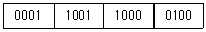
- 2673
- 1984
- 1784
- 1094
(정답률: 알수없음)
67. 다음 코드 중 7 비트 코드로 구성된 것은? (단, Parity bit는 제외)
- EBCDIC 코드
- BCD 코드
- GRAY 코드
- ASCII 코드
(정답률: 알수없음)
68. 다음 중 CPU가 수행하는 4개 사이클(cycle)에 속하지 않는 것은?
- Fetch cycle
- Execute cycle
- Interrupt cycle
- jump cycle
(정답률: 알수없음)
69. ROM에 대한 설명 중 잘못된 것은?
- 내용을 읽어내는 것만 가능하다.
- 기억된 내용을 임의로 변경시킬 수 없다.
- 주로 마이크로 프로그램과 같은 제어 프로그램을 기억시키는데 사용한다.
- 사용자가 작성한 프로그램이나 데이터를 기억시켜 처리하기 위해 사용하는 메모리이다.
(정답률: 알수없음)
70. 컴퓨터의 주메모리(main memory)장치에 널리 사용 되는 것은?
- 자기테이프
- 플로피 디스크
- 하드 디스크
- 반도체 IC 메모리
(정답률: 알수없음)
71. 실시간으로 동영상 정보를 주고받을 수 있는 수준 이상의 고속·대용량의 정보통신망은?
- 실시간 고속인터넷통신망
- 종합디지털정보통신망
- 광대역종합통신망
- 초고속정보통신망
(정답률: 알수없음)
72. 자가통신설비의 사용정지 사유에 해당되지 않는 것은?
- 규정을 위반하여 타인의 통신을 매개할 때
- 긴급한 재해구조를 위하여 사용하게 되는 때
- 설치한 목적에 반하여 운용할 때
- 타인의 설비에 장애의 우려가 있을 때
(정답률: 알수없음)
73. 다음 중 부가통신사업에 해당하는 것은?
- 전기통신회선설비를 설치하고 이를 이용하여 전신·전화역무등 정보통신부령이 정하는 종류와 내용의 전기통신역무를 제공하는 사업
- 기간통신사업자의 전기통신회선설비등을 이용하여 기간통신역무를 제공하는 사업
- 정보통신부령이 정하는 구내에 전기통신설비를 설치하거나 이를 이용하여 그 구내에서 전기통신역무를 제공하는 사업
- 기간통신사업자로부터 전기통신회선설비를 임차하여 기간통신역무외의 전기통신역무를 제공하는 사업
(정답률: 알수없음)
74. 정보화촉진기본계획의 수립에 포함되는 사항이 아닌 것은?
- 정보화촉진 등과 관련된 국제협력에 관한 사항
- 정보통신기반의 고도화에 관한 사항
- 정보화촉진 등에 대한 시책의 기본 방향
- 전기통신설비의 통합추진에 관한 사항
(정답률: 알수없음)
75. 다음 요소들 중에서 정보통신 전송기준의 척도에 해당되지 않는 것은?
- 비트 오율
- 블록 오율
- 호손율
- 전신 왜율
(정답률: 알수없음)
76. 정보통신공사업자 이외의 자가 시공할 수 있는 공사가 아닌 것은?
- 데이터 단말기 설치공사
- 일반전화 단말기 설치공사
- 구내교환기 설치공사
- FAX단말기 설치공사
(정답률: 알수없음)
77. 다음 빈칸에 순서대로 알맞는 말은?
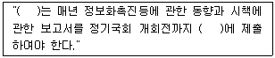
- 국회, 정부
- 정보통신부, 국회
- 정부, 국회
- 정부, 정보통신부
(정답률: 알수없음)
78. 다음 중 별정통신사업을 경영하고자 하는 자는 정보통신부령이 정하는 바에 따라 어떻게 하여야 하는가?
- 정보통신부장관에게 신고
- 정보통신부장관에게 승인
- 정보통신부장관에게 허가
- 정보통신부장관에게 등록
(정답률: 알수없음)
79. 사용자가 희망하는 두 지점 사이에 교환망을 거치지 않고 직접 연결한 회선은?
- 일반교환회선
- 정보교환회선
- 메시지교환회선
- 특정통신회선
(정답률: 40%)
80. 다음 중 주로 통신기능에 장애를 줄 수 있는 불요전자파의 주파수 범위로 알맞은 것은?
- 300[Hz]~30[MHz]
- 300[Hz]~3400[Hz]
- 3[KHz]~30[KHz]
- 10[KHz]~3[GHz]
(정답률: 알수없음)